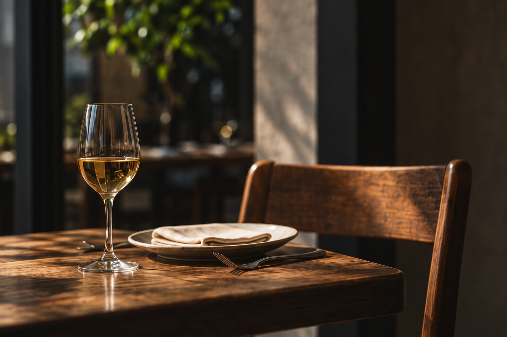
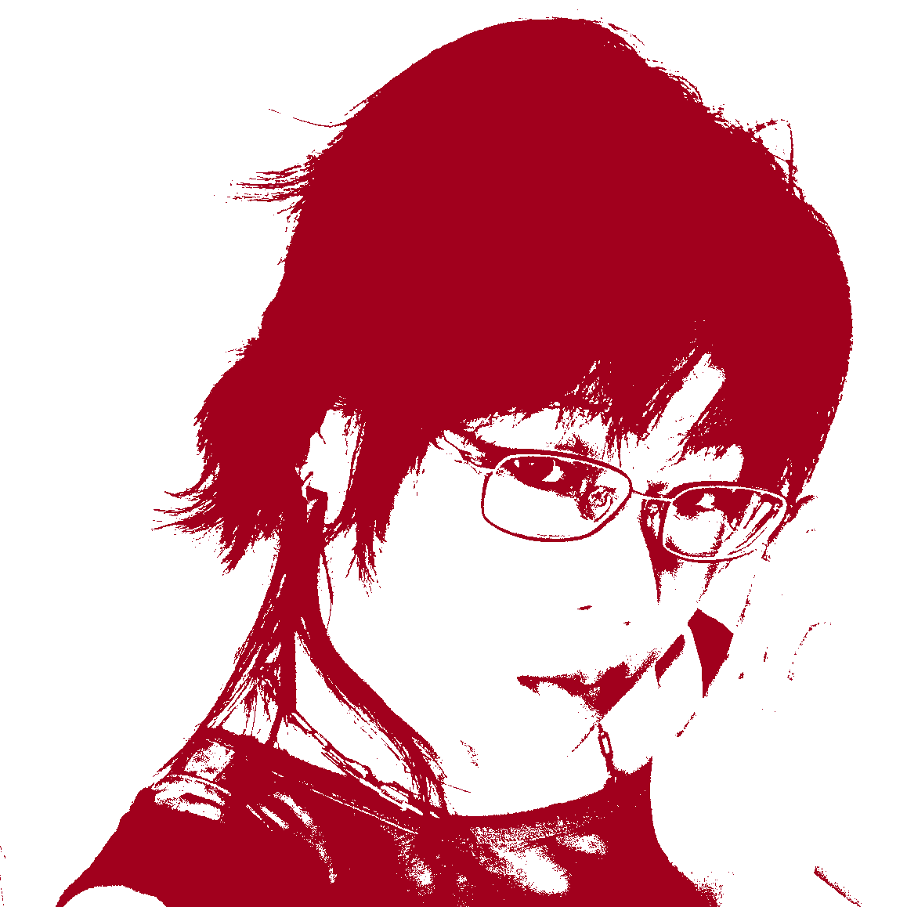

A note from Nio
You already have something worth telling.
Let more people discover your place.

sēzn makes smaller, more focused websites for restaurants — built around what you actually need, without the agency overhead.
AI can make the website. I make it feel like yours.

Let’s make the website feel like your place.
Nio Jin grew up around a family restaurant business. With a BFA in Communication Design from Parsons, Nio designs and builds each site personally.
Ask Nio a questionConcept studies showing how a business can feel like itself online.
Have something worth showing?
Let’s make it visible